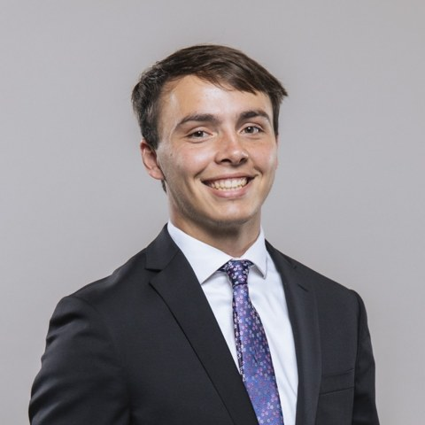

William Bartel
Ph.D. Student, Mechanical Engineering
University of Notre Dame · ROAM Lab
I'm a Ph.D. student in the Robotics and Controls Group at Notre Dame, advised by Patrick Wensing. My research combines classic control theory and robotics fundamentals with modern generative AI to help humanoid and legged robots move and manipulate the world. Before Notre Dame, I earned my B.S. in Mechanical Engineering from Villanova University, magna cum laude.
Publications
EulerFlow: Inverse-Dynamics-Guided Flow Matching for Humanoid Motion Generation
Presentations
Physics-Guided Flow Matching for Humanoid Loco-Manipulation
The Robotic Future of Indiana Manufacturing
Research
Generative AI for Legged Robots
2025 – presentDesigning a physics-guided flow matching framework for humanoid loco-manipulation, and building a motion-capture pipeline to record human demonstrations for imitation learning.
Quadruped Loco-Manipulation
2023 – 2025Implemented disturbance rejection for a quadruped with an arm using Cascaded Fidelity MPC in C++, and trajectory optimization of a single-rigid-body model with iLQR.
Landmine Detection Robot
Summer 2022Helped design and build a robot that drags mine detectors under vegetation to make landmine removal in Cambodia safer — electronics housing, wiring, schematics, and code.
Teaching
- Lead Instructor, First-Year Engineering2026 – 2027
- Teaching Assistant, Mechatronics LabSpring 2026
- Teaching Assistant, Introduction to RoboticsFall 2025
- Teaching Assistant, Introduction to Design Thinking2023 – 2024
Outreach & Leadership
- Community and university outreach — robot demos, lab tours, science fair judging2024 – present
- Assistant Rector, O'Neill Family Hall2025 – 2026
- Robotics Head Coach, Robinson Community Learning Center2024
Honors
- First-Year Engineering Teaching Apprenticeship Fellowship2025 – 2026
- Notre Dame AME Graduate Scholarship2023
- Villanova National Merit Scholarship2020